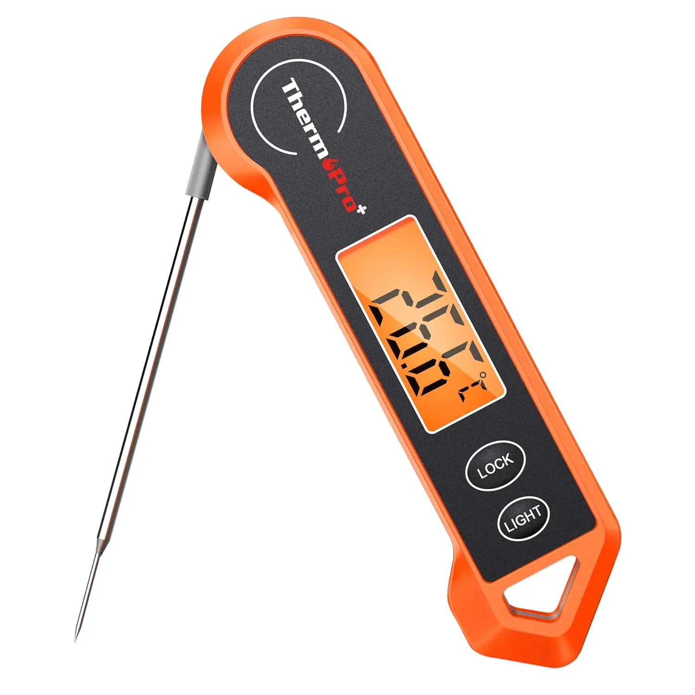

¿Por qué tu Buttercream siempre te ha Fallado?
El Buttercream (crema de mantequilla) es la cobertura más popular, pero también la más temperamental. Los fallos más comunes son la textura granulada, el sabor excesivamente graso y, lo más crítico, el colapso en climas cálidos. La versión ABC 5.0 es la técnica depurada que resuelve todos estos problemas, combinando la cremosidad con una estructura de soporte insuperable.

1. Los 5 Tipos de Buttercream que Dominarás con el Master
Un profesional conoce la receta ideal para cada ocasión y cada pastel. La Maestría 5.0 te enseña a elegir y ejecutar las técnicas de los glaseados más prestigiosos:
- Buttercream Americano (ABC): El más rápido, pero el menos estable. Ideal para rellenos firmes y principiantes.
- Buttercream Suizo (SMBC): Estructura perfecta y sabor ligero. Ideal para cobertura lisa y decoración con manga. *La estrella del Master.*
- Buttercream Italiano (IMBC): El más estable y sedoso. Requiere un termómetro para el jarabe de azúcar, pero es ideal para bodas y eventos al aire libre.
- Buttercream de Merengue Ruso: Rápido de hacer y muy blanco, perfecto para efectos de flores y encaje.
- Buttercream de Crema Pastelera (Custard-based): Para un sabor más complejo y menos dulce.
2. Solución 100% Garantizada a tus Fallos Comunes
¿Por qué mi Buttercream queda Granulado o Separado?
Esto ocurre por dos razones principales: 1) La mantequilla está demasiado fría o demasiado caliente. 2) No has cremado correctamente. El Master 5.0 te enseña la temperatura exacta de la mantequilla y el tiempo de batido para una emulsión de ensueño.
¿Cómo Lograr ese Acabado Liso y sin Burbujas?
El secreto de un glaseado de alta costura es el batido lento final. Después de alcanzar la textura deseada, el Master te enseña a usar la paleta y el calor residual para liberar el aire y conseguir un acabado espejo.
🛒Tip de Herramienta Amazon: Un termómetro digital de caramelo es imprescindible si quieres dominar el Buttercream Suizo e Italiano. ¡La precisión lo es todo!
 Ver Termómetro Digital PRO🎓 ¡Accede al Master que te Dará la Seguridad que Necesitas!
Deja de desperdiciar ingredientes por un Buttercream que se separa. Únete a miles de profesionales que ya confían en la técnica ABC 5.0 y vende pasteles con una cobertura perfecta, garantizada.
✅ Inscríbete Hoy en El ABC del Buttercream 5.0La estabilidad de tu Buttercream es la estabilidad de tu negocio.
¿Quieres Seguir Explorando?
Encuentra más guías profesionales y tu camino a la certificación con estos artículos relacionados.
➡️ ¿Cuál es la mejor batidora de pie profesional? ➡️ Impresoras comestibles ➡️ Lunch Box📖 Más Guías Esenciales y Recetas
Descubre el resto de nuestros artículos de SEO sobre tendencias, equipamiento y técnicas avanzadas de repostería.
➡️ Ver todos los Artículos🎓 Catálogo de Cursos PRO: Repostería, Pastelería Fina, Diseño 3D y Cocina de Alta Especialización.
Explora la comparativa detallada de todos los programas disponibles: Repostería Vegana, Chocolatería, Pastelería Canina y más.
📚 Ver Todos los Cursos